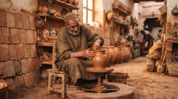

Rejoindre le Répertoire National
des Coopératives Taawon
Faites référencer votre coopérative, protégez votre savoir-faire artisanal et offrez une
visibilité authentique à vos maîtres artisans sans aucun intermédiaire marchand.

PATRIMOINE IMMATÉRIEL
Transmission & Digité
Un processus rigoureux, transparent &
solidaire
Une démarche collaborative conçue avec et pour les coopératives
marocaines pour garantir l'origine et l'excellence de chaque métier d'art.
Pourquoi s'inscrire ?
Répertoire officiel consulté par les chercheurs,
conservateurs et passionnés.
Mise en relation directe avec les clients et
voyageurs responsables (téléphone, atelier,
email).
Protection et documentation archivistique
contre la contrefaçon industrielle.

« Taawon préserve notre voix
authentique. Nous recevons les
visiteurs directement au village sans
intermédiaire. »
Coopérative potière de l'Oued Laou
Dossier de Candidature Coopérative
Veuillez renseigner les informations exactes de votre structure. Les champs annotés d'un astérisque sont
indispensables à l'instruction du dossier.